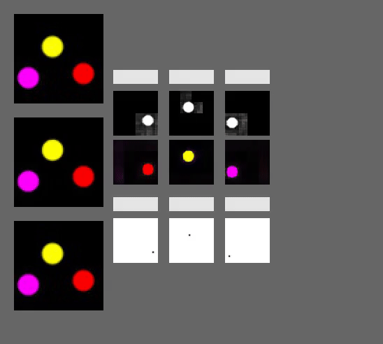

Tracking Objects through Occlusion
We use the ADEPT vanish scenario as test set, which starts with a large screen placed in the center of the scene. Then one or two objects enter the scene from opposite directions, disappear behind the screen, traverse the area behind the screen while hidden, reappear on the other side of the screen, and finally exit the scene. Here we display the model's imaginations of the occluded objects. Only Loci-Looped is able to imagine the objects' continued existence.
| Input | Loci-Looped (Ours) | Loci-Unlooped | G-SWM |

The video displays Loci-Looped's scene perception. The overall architecture fosters disentangled object representations and explicit information fusion, which allows for a high degree of interpretability.

Violation of Expectation
We focus on the ADEPT's vanish scenario that tests the concept of object permanence and directional inertia. The surprise condition (11 videos) features two objects that again traverse the scene behind the occluder this time, however, only one object reappears from behind the screen whereas the other vanishes while behind the screen. This scenario is designed to test the model's anticipation about the reappearance of the occluded object.
The model's surprise response indicates a significantly greater level of surprise when hidden objects fail to reappear showing a clear violation of expectation. Note that this behavior is fully emergent, as Loci-Looped is never trained on objects that permanently disappear behind occluders, and shows the model's strong bias to maintain stable, consistent object representations.
Sensory Interruptions
Having seen that Loci-Looped can handle the representation of partially observable scenes, we now investigate how it behaves when no observation is available for a brief period of time, simulating a short blink or visual blackout using the CLEVRER dataset. Loci-Looped is able to maintain the object representations during the blackout period and correctly predict the object dynamics in the blackout period.
Imaginations over long sequences
While the above addressed sensory interruptions last only for short time periods, we now test how well the model can generalize to long interruptions, by predicting scene dynamics over a long temporal horizon. We see that Loci-Looped is able to maintain the object representations over long sequences and predict the object dynamics also in the long term.

Real-World Videos
The approach is not limited to synthetic data but can also be applied to real-world videos. In this case Loci-Looped is able to track cars through occlusions while maintaining complete object shapes and representations.

References
[1] Lin, Zhixuan, et al. "Improving generative imagination in
object-centric world models." ICML. 2020.
[2] Yi, Kexin, et al. "CLEVRER: CoLlision Events for Video
REpresentation and Reasoning." ICLR. 2020.
[3] Traub, Manuel, et al. "Learning What and Where: Disentangling
Location and Identity Tracking Without Supervision." ICLR. 2023.
[4] Yi, Kexin, et al. "CLEVRER: CoLlision Events for Video
REpresentation and Reasoning." ICLR. 2020.
[5] Hafner, Lillicrap, et al. "Dream to Control: Learning Behaviors by Latent Imagination."
arxiv. 2020.
[6] Smith, Kevin, et al. "Modeling expectation violation in intuitive physics
with coarse probabilistic object representations." NeurIPS. 2019.
[7] Kipf, Thomas, et al. "Conditional Object-Centric Learning
from Video." ICLR. 2021.